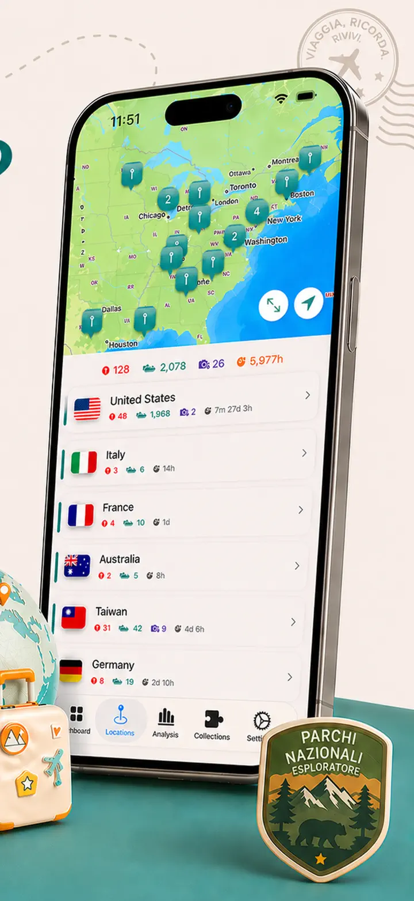
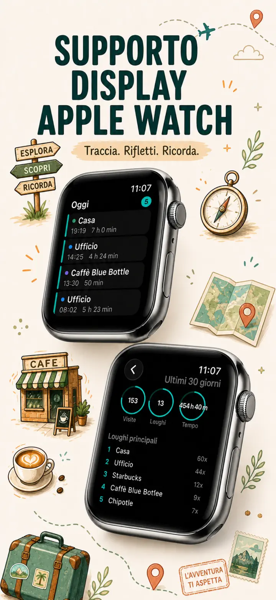
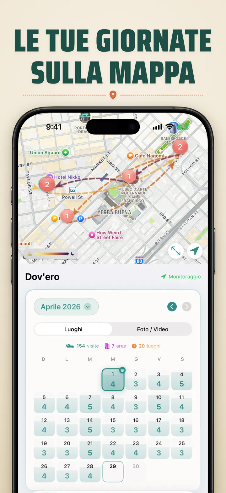
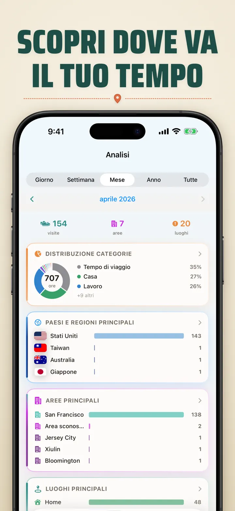
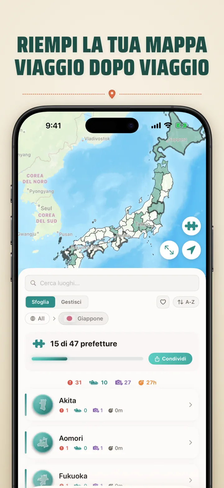
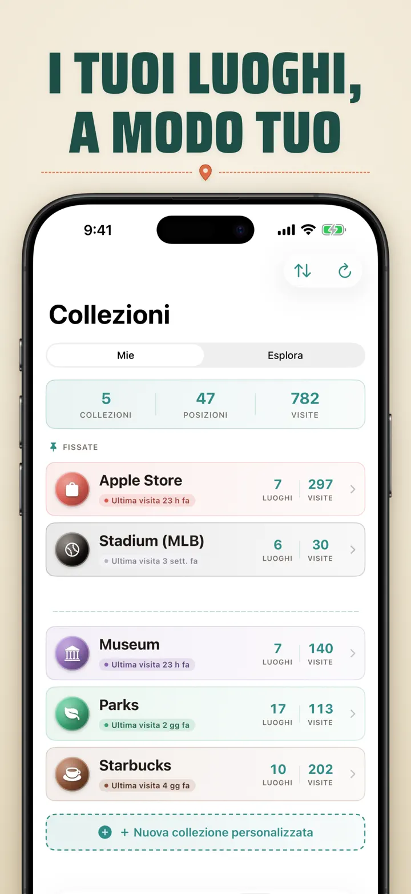
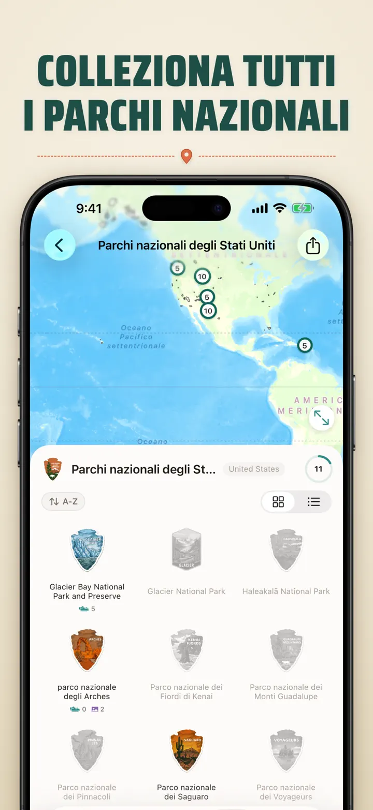
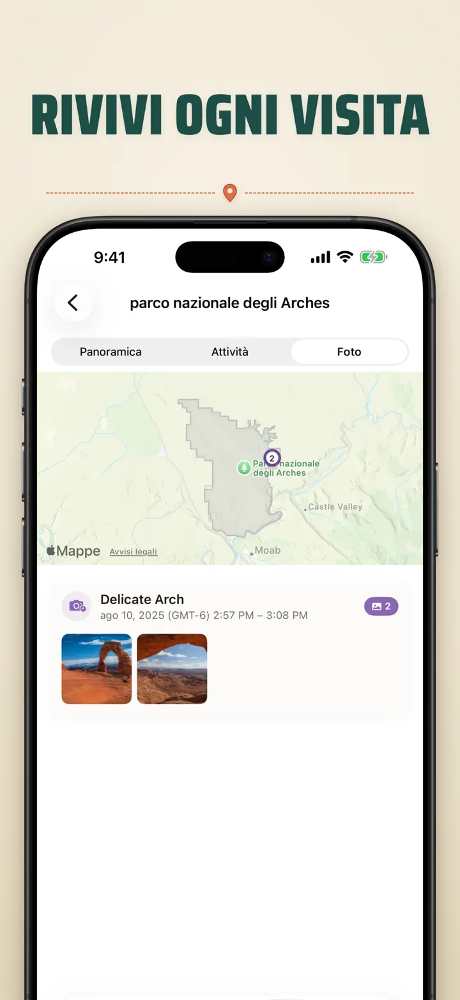

Dov'ero?
Luoghi, foto e progressi
Novità: i 103 santuari Ichinomiya del Giappone, ognuno col proprio distintivo intagliato. Visite tracciate in automatico e timeline privata, sul tuo dispositivo.
Scarica dall’App StoreInformazioni sull’app
Dov'ero — La Tua Memoria Personale dei Luoghi
Vuoi ricordare quel ristorante fantastico del mese scorso? O sapere quanto tempo passi in ufficio rispetto a casa? Dov'ero traccia le tue visite e costruisce una splendida timeline della tua vita.
TRACCIAMENTO AUTOMATICO
Nessuna registrazione manuale. L'app registra silenziosamente quando arrivi e parti dai luoghi, creando uno storico dettagliato senza sforzo.
VISTA CALENDARIO INTELLIGENTE
Visualizza le visite per giorno, settimana o mese. Il calendario mostra il numero di visite e i luoghi unici. Tocca un giorno per vedere dove sei stato.
WIDGET SCHERMATA HOME E DI BLOCCO
Guarda le tue visite recenti con il widget medio della schermata Home. Quelli della schermata di blocco mostrano la posizione attuale, un timer di sosta in tempo reale o le visite di oggi — toccali per aprire l'app.
LUOGHI ORGANIZZATI
I luoghi vengono raggruppati per regione e città. Assegna categorie come Casa, Lavoro, Palestra o Bar. Crea le tue con icone e colori.
ANALISI AVANZATE
Scopri gli schemi della tua vita:
- Distribuzione del tempo tra le categorie
- I tuoi luoghi più visitati
- Analisi del ritmo settimanale
- Tendenze nella frequenza delle visite
- Durata delle soste per luogo — giorno, settimana, mese o anno
COLLEZIONE DI REGIONI PER PAESE
Trasforma i tuoi viaggi in un puzzle! Scopri quante province, regioni o stati hai visitato in ogni paese. Condividi i progressi come immagine.
PROGRESSI NEI PARCHI NAZIONALI
Esplora la natura! Registra le tue visite ai parchi nazionali accanto ai luoghi quotidiani.
100 CASTELLI FAMOSI DEL GIAPPONE
In viaggio in Giappone? Una collezione integrata traccia le tue visite ai 100 castelli famosi del paese. La trovi in Collezioni → Esplora → Giappone.
COLLEZIONI PERSONALIZZATE
Apple Store, musei, birrifici, librerie — traccia ciò che vuoi. Imposta parole chiave e si riempie da sola. Aggiungi o rimuovi a mano. Conteggio, storico e mappa per ciascuna.
IMPORTA LA TUA CRONOLOGIA DEI LUOGHI
Arrivi da un'altra app? Porta con te tutta la cronologia — il formato viene rilevato in automatico, le esportazioni grandi sono gestite e vedi un'anteprima prima di importare qualsiasi cosa:
- Google Timeline (esportazione da Google Maps o Google Takeout)
- Arc Timeline (i file .json mensili che esporti da Arc)
- Moves (backup ProtoGeo / Facebook Moves)
GESTIONE IN BLOCCO
Gestisci tutti i tuoi luoghi in un unico posto. Cerca, ordina e filtra. Seleziona più luoghi per categorizzarli o eliminarli in blocco.
LA PRIVACY AL PRIMO POSTO
I tuoi dati di posizione restano sul tuo dispositivo. Nessun account, nessun server. I tuoi spostamenti sono affari tuoi.
PERFETTO PER:
- Tracciare ore e luoghi di lavoro
- Ricordare ristoranti e negozi visitati
- Analizzare la routine quotidiana
- Tenere un diario di viaggio e segnare i parchi nazionali
- Note spese e tracciamento chilometri
- Capire come distribuisci il tuo tempo
FUNZIONALITÀ:
- Rilevamento automatico di arrivo e partenza
- Vista calendario con timeline giornaliera
- Widget schermata Home e di blocco con collegamenti diretti
- Raggruppamento luoghi per regione e città
- Categorie personalizzate con icone e colori
- Suggerimenti intelligenti da Apple Maps
- Storico visite dettagliato con durata
- Durata soste per luogo (giorno/settimana/mese/anno)
- Dashboard analitica
- Ricerca e filtro luoghi
- Regioni per paese con immagine puzzle
- Monitoraggio dei parchi nazionali
- Collezione integrata dei 100 castelli famosi del Giappone
- Collezioni personalizzate con parole chiave automatiche, modifica manuale e statistiche
- Gestione luoghi in blocco
- Importazione da Google Timeline, Arc Timeline e Moves
- Esportazione
- Nessun account richiesto
- Design attento alla privacy
Inizia oggi la tua memoria dei luoghi. Scarica Dov'ero e non dimenticare mai più dove sei stato.
Privacy Policy: https://masawata.net/privacy-policy.html Terms Of Service: https://www.apple.com/legal/internet-services/itunes/dev/stdeula/
Screenshot








Dov'ero?
Novità: i 103 santuari Ichinomiya del Giappone, ognuno col proprio distintivo intagliato. Visite tracciate in automatico e timeline privata, sul tuo dispositivo.
Scarica dall’App Store